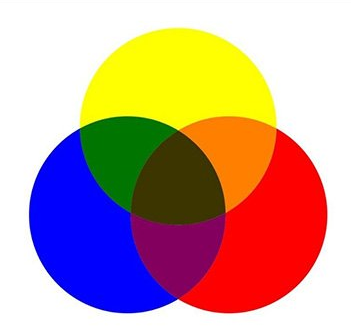

RYB
Sus colores primarios son: Rojo, Amarillo y Azul. De ahí sus siglas RYB (Red, Yellow , Blue).
Trabaja el color material: la pintura.
Es un sistema sustractivo, es decir que al combinar los colores se genera un color más oscuro (como el que vemos en el centro de la imagen), porque se sustrae la luz reflectante.
Se utiliza en: pintura, dibujo, cerámica, artesanía y el resto de artes plásticas.
